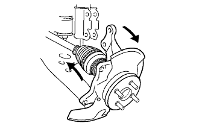
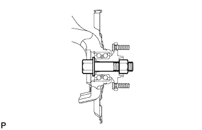

Front drive shaft (4WD) removed |
| 1. Battery Mina Star Minal Cut off |
reference| 2. The engine Anda cover LH is removed |
Remove two bolts and two screws and remove the engine and cover LH.
| 3. The engine Anda cover RH is removed |
Remove two bolts and two screws.
Remove the nut and remove the engine and cover RH.
| 4. Pull out the automatic trance axleflood |
Use the socket hexagon wrench 10 to remove the drain plug and gasket and extract the fluid.
Tighten the drain plug via a new gasket.
| 5. Pull out the transfilele |
| 6. Remove the front tire |
| 7. Remove the front axle shaft nut LH |
 |
Set the SST according to the grooves of the front drive shaft asser LH, and use a hammer to solve the bark.
Use a socket wrench (30mm) to remove the front axle hub nut LH.
| 8. Remove the front axle shaft nut RH |
| 9. Remove the front disc brake caliper ASSY LH |
 |
Remove the two bolts and separate the Dysque Brake Kikiki ASSY from the steering knuckle.
Attach the mark to the disc and axle hub and remove the front disc.
| 10. Front disc brake caliper Assy RH removed |
| 11. Speed sensor FR LH separation |
 |
Remove the speed sensor FR LH clip and the bolt of the flexible hose and separate the front shock absorber ASSY LH.
 |
Remove the bolt and separate the speed sensor FR LH from the steering knuckle.
| 12. Speed sensor FR RH separation |
| 13. Tie rod end LH separation |
 |
Remove the cotter pin and castle nut.
Use SST to separate the tie rod end LH from the steering knuckle.
| 14. Tie rod end RH separation |
| 15. Front axle assigned separation |
 |
Remove the two bolts and two nuts and separate the front axle Ass, from the front shock absorber ASSY LH.
Use a plastic hammer to lightly hit the tip of the front drive shaft ASSY LH and remove the front drive shaft ASSY LH and the front axle ASSY LH.
|  |
Press the front axle ASSY LH to the outside of the vehicle and pull out the front drive shaft ASSY LH from the front axle ASSY LH.
| 16. Front axle assigned separation |
| 17. Front drive shaft ASSY LH removed |
 |
Remove the SST to the position of the figure on the front drive shaft ASSY LH.
| 18. Remove the front drive shaft ASSY RH |
 |
Press the bearing bracket hole napping ring with a square axis flather and remove it from the bearing bracket.
Remove the No. 1 drive shaft bearing bracket bolt.
 |
Remove the front drive shaft ASSY RH from the drive shaft bearing bracket.
| 19. Fixed front axle ASSY LH |
|  |
| 20. Fixed front axle ASSY RH |